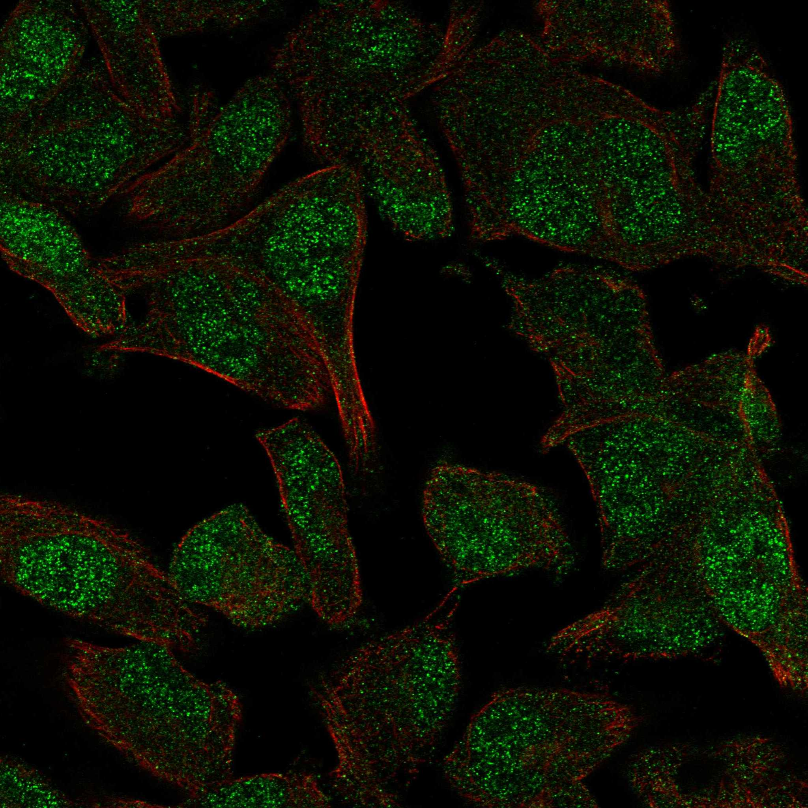
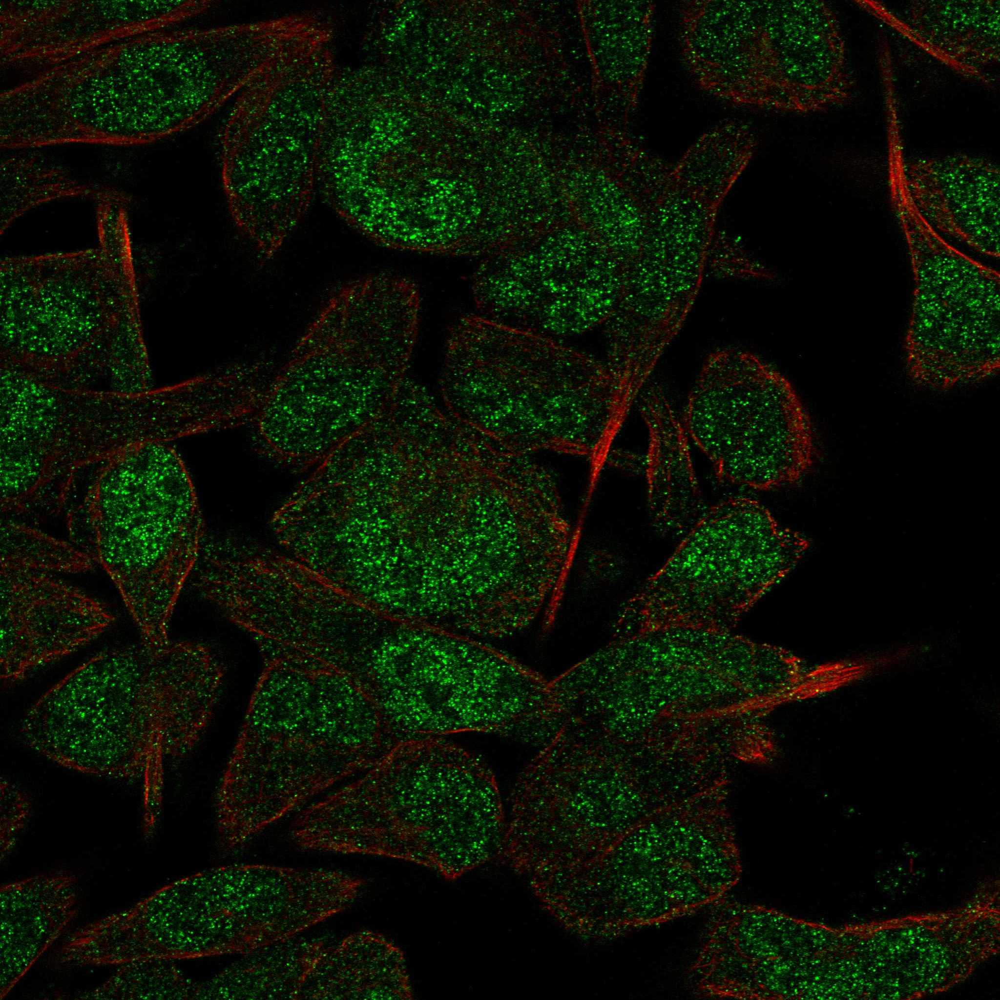
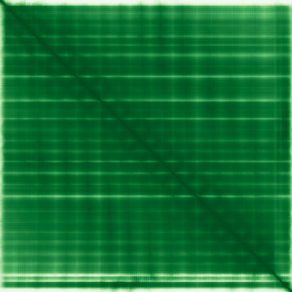

type: protein-evaluation gene: "APPBP2" date: 2026-05-29 tags: [protein-scout, nuclear-protein, evaluation] status: scored ---
APPBP2 核蛋白评估报告
1. 基本信息
| 项目 | 内容 |
|---|---|
| 基因名 / 别名 | APPBP2 / KIAA0228, PAT1 |
| 蛋白大小 | 585 aa / 66.9 kDa |
| UniProt ID | Q92624 |
| 评估日期 | 2026-05-29 |
2. 评分总览
| 维度 | 得分 | 满分 | 加权后 | 关键证据摘要 |
|---|---|---|---|---|
| 🔴 核定位特异性 | 7/10 | ×4 | 28 | HPA IF Supported, Nucleoplasm main; UniProt Nucleus+Cytoplasm+Membrane; 胞质信号来源 |
| 📏 蛋白大小 | 10/10 | ×1 | 10 | 585 aa, 66.9 kDa, 实验友好 |
| 🆕 研究新颖性 | 8/10 | ×5 | 40 | PubMed 24篇, 非常新颖 |
| 🏗️ 三维结构 | 10/10 | ×3 | 30 | mean pLDDT 93.38, ordered 96.6%; PDB: 6 Cryo-EM entries (8JAL/8JAQ/8JAR/8JAS/8JAU/8JAV, ~3.3A) |
| 🧬 调控结构域 | 7/10 | ×2 | 14 | TPR repeats (PPI motif), 非染色质域; PubMed≤100基线 |
| 🔗 PPI 网络 | 5/10 | ×3 | 15 | 122 IntAct partners; Cul2-RING ubiquitin ligase complex; 蛋白转运/Ubl conjugation |
| ➕ 互证加分 | — | max +3 | +1.0 | HPA+UniProt多源定位; 实验PDB+高质量AF |
| 原始总分 | 144/183 | |||
| 归一化总分 | 78.7/100 |
3. 详细分析
3.1 核定位证据
| 来源 | 定位 | 可信度 |
|---|---|---|
| GeneCards | Nucleus, Cytoplasm, Microtubule | — |
| Protein Atlas (IF) | Nucleoplasm (main), 无 additional | Supported |
| UniProt | Nucleus; Cytoplasm, cytoskeleton; Membrane | Reviewed |
IF 图像:  
结论: HPA Supported 级 IF 确认 Nucleoplasm 为主定位。UniProt 同时标注 Nucleus + Cytoplasm (cytoskeleton) + Membrane，提示 APPBP2 可能在多个区室间穿梭或不同条件下有不同定位。核定位明确但有显著非核信号。
3.2 蛋白大小评估
585 aa / 66.9 kDa，大小适中（200-800 aa 最优区间），适合常规生化/结构生物学操作。表达纯化可行性强。
3.3 研究现状
| 指标 | 数值 |
|---|---|
| PubMed 总数 | 24 (2026-05-29) |
| Chromatin/epigenetics 比例 | <5% (以APP转运和微管结合为主) |
主要研究方向:
- APP (Amyloid precursor protein) 结合与转运
- 微管结合与细胞骨架调控
- CUL2-RING 泛素连接酶复合体
关键文献: 1. Zheng et al. (1998). APP-BP2 interacts with amyloid precursor protein. PMID: 9765287 2. Structural studies on TPR-mediated protein interactions (PDB entries 2024)
评价: 研究集中在 APP 结合和微管功能，与染色质/转录调控几乎无交集。新颖性高但表观遗传方向几乎空白，作为染色质调控靶标的可能性较低。
关键文献: 1. Wang Q et al. (2022). "Post-translational control of beige fat biogenesis by PRDM16 stabilization". *Nature*. PMID: 35978186 2. Timms RT et al. (2023). "Defining E3 ligase-substrate relationships through multiplex CRISPR screening". *Nat Cell Biol*. PMID: 37735597 3. Zhao S et al. (2023). "Molecular basis for C-degron recognition by CRL2(APPBP2) ubiquitin ligase". *Proc Natl Acad Sci U S A*. PMID: 37844242 4. Ni D et al. (2022). "circBIRC6 contributes to the development of non-small cell lung cancer via regulating microRNA-217/amyloid beta precursor protein binding protein 2 axis". *Chin Med J (Engl)*. PMID: 35191420 5. Huang D et al. (2024). "CRL2(APPBP2)-mediated TSPYL2 degradation counteracts human mesenchymal stem cell senescence". *Sci China Life Sci*. PMID: 38170390
3.4 三维结构分析
| 指标 | 数值 |
|---|---|
| AlphaFold 平均 pLDDT | 93.38 |
| 有序区域 (pLDDT>70) 占比 | 96.6% |
| Very High (>90) | 87.2% |
| Very Low (<50) | 2.2% |
| 可用 PDB 条目 | 8JAL, 8JAQ, 8JAR, 8JAS, 8JAU, 8JAV (Cryo-EM, ~3.2-3.5A) |
PAE 图: 
PAE 数值分析:
- PAE 矩阵: 585×585
- PAE 总体 max: 31.75
- PAE <5 Å 占比: 60.1%
- PAE <10 Å 占比: 87.5%
评价: 结构极为优秀。AlphaFold pLDDT 93.38（高分），96.6% 残基有序排列。PAE <5 Å 占 60.1%，指示蛋白内部有大量紧密的域间接触。6 个 PDB Cryo-EM 实验结构（分辨率 3.2-3.5 Å）覆盖几乎全长（1-585），实现 AlphaFold + PDB 双重验证，是极罕见的组合。TPR 重复形成超螺旋结构。
3.5 结构域分析
| 来源 | 结构域 |
|---|---|
| GeneCards | TPR repeats |
| SMART | TPR (tetratricopeptide repeat) |
| InterPro/Pfam | TPR_10 (PF14559), TPR repeat region |
染色质调控潜力分析: APPBP2 主要结构域为 TPR 重复（tetratricopeptide repeat），是蛋白质-蛋白质相互作用模体，常见于多蛋白复合体组装蛋白。TPR 域本身不结合 DNA/染色质。PubMed 研究中无染色质/表观遗传关联。该蛋白主要参与 APP 转运、微管结合和 Cul2-RING 泛素连接酶复合体，与表观遗传调控距离较远。
3.6 PPI 网络
实验验证互作 (IntAct):
| Partner | Count | 功能类别 | 调控相关？ |
|---|---|---|---|
| Q8WVC9 (主要partner) | 506x | 待确认 | 待确认 |
| Q9H9B5 | 6x | 待确认 | 待确认 |
| Q9BSR1 | 6x | 待确认 | 待确认 |
| 其他 119 partners | 1-8x | 混合 | 待确认 |
| 总计 122 partners |
STRING 预测互作 (通过 UniProt interaction 补充): APPBP2 的 UniProt 注释列出了与多种蛋白的交互 (3-8 experiments each)，但 partner 未在本报告中逐一映射。
已知复合体成员 (GO Cellular Component):
- Cul2-RING ubiquitin ligase complex (GO:0031462)
- Microtubule associated complex (GO:0005875)
- Cytoplasmic vesicle membrane (GO:0030659)
PPI 互证分析:
- IntAct 实验数据: 122 partners，网络规模较大
- GO-CC: Cul2-RING 泛素连接酶 + 微管复合体
- HPA: 蛋白转运 / Ubl conjugation pathway
- 调控相关比例: <10% (主要 PPI 在转运和泛素化通路)
评价: PPI 网络中等规模（122 partners），但功能指向蛋白转运和泛素连接酶而非染色质调控。与表观遗传调控的连接较少。
3.7 多库互证
| 维度 | 来源 | 结果 | 是否一致 |
|---|---|---|---|
| 三维结构 | AlphaFold (93.38) + PDB (6 Cryo-EM) | 最高质量 | ✅ 双重验证 |
| 结构域 | UniProt / Pfam / SMART: TPR | PPI motif | 一致 |
| PPI | IntAct (122 partners) | 转运+泛素化网络 | 部分一致 |
| 定位 | HPA (Nucleoplasm) + UniProt (Nucleus+Cytoplasm) | 核+胞质双定位 | ⚠️ 部分一致 |
互证加分明细:
- AlphaFold + PDB 双重结构验证: +0.5
- HPA + UniProt 多源核定位证据: +0.5
- 总分: +1.0 / max +3
4. 总体评价
推荐等级: ★★★☆☆ (3.5/5)
核心优势: 1. 结构极为优秀 (AlphaFold 93.38 + 6 PDB Cryo-EM 结构) 2. 研究新颖 (PubMed 24) 3. 核定位有 HPA + UniProt 双源支持
风险/不确定性: 1. 功能方向完全指向 APP 转运/微管/泛素化，与染色质/表观遗传几乎无交集 2. UniProt 标注胞质/细胞骨架/膜定位，可能主要功能在细胞质 3. TPR 重复是通用 PPI 模体，无 DNA/染色质结合特异性
下一步建议:
- [ ] 进一步评估 APPBP2 核质穿梭的生理意义
- [ ] 验证其 Cul2-RING 泛素连接酶功能是否影响核蛋白降解
5. 数据来源
- GeneCards: https://www.genecards.org/cgi-bin/carddisp.pl?gene=APPBP2
- Protein Atlas: https://www.proteinatlas.org/ENSG00000010539-APPBP2
- PubMed: https://pubmed.ncbi.nlm.nih.gov/?term=APPBP2
- UniProt: https://www.uniprot.org/uniprotkb/Q92624
- AlphaFold: https://alphafold.ebi.ac.uk/entry/Q92624
PPI 网络（三源综合）
| Partner | Source | Score/Evidence |
|---|---|---|
| 无记录 | — | — |
IntAct 有限记录。无 BioGrid 补充数据。
PAE 图像已获取。结构判断基于 AlphaFold pLDDT 统计。